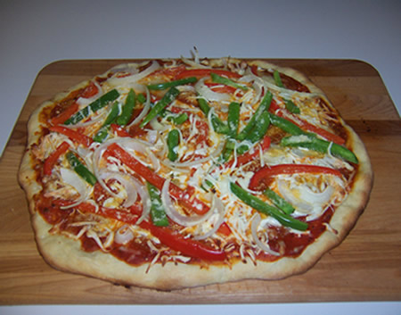

Oven Pizza with Store Bought Dough

Description
Ingredients
- Store bought pizza dough (about 12-16 oz)
- Pizza sauce (or whatever you might like as a bottom sauce, like pesto or just tomatoes)
- Mozarella chesse (either shredded or large chunks spread around.)
- Vegetable or Meat toppings
Steps
- Step 1: Preheat oven to highest it will go. Usually between 550 and 475 depending on the oven. If you have a pizza stone, place in the oven to get warm now.
- Step 2: Roll out pizza dough. Many people use flour, but too much flour can make the dough rough. I use a light amount of olive oil on the counter and rub it around.
- Step 3: You want to push from the center and push outwards making sure to leave a healthy sized crust.
- Step 4: At this point I like to place the dough onto parchment paper which will make the transfer to the oven much easier.
- Step 5: Top your pizza. Start with your sauce and spread it all over the dough, leaving a little rim around the edge for the crust. Then add your cheese, either shredded or large chunks, or both. Lastly arrange any other topping you might want on your pizza.
- Step 6: Bake the pizza for about 8-12 minutes depending on how thick the crust is. The edges should be golden brown and the cheese should be melty and bubbly. If you are not using a pizza stone, use a spatula to lift up the pizza to see if the bottom is browning evenly. If it is still white and doughy, leave it in for a bit longer.
- Step 7: remove pizza from oven and let cool for a couple of minutes. Slice and enjoy!